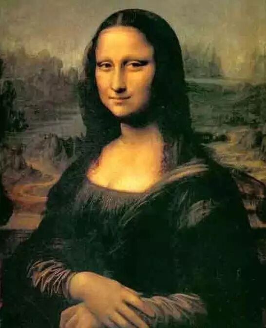
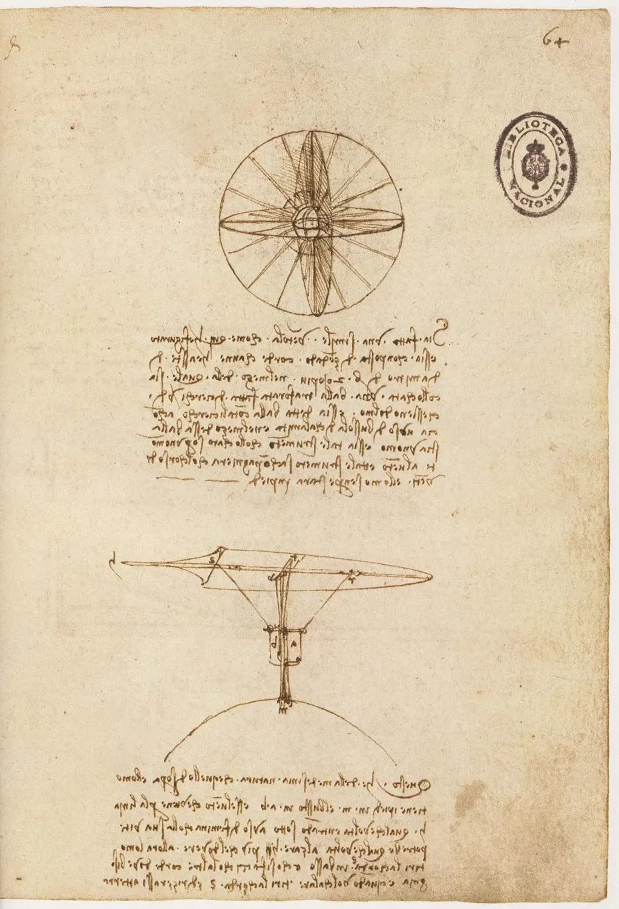
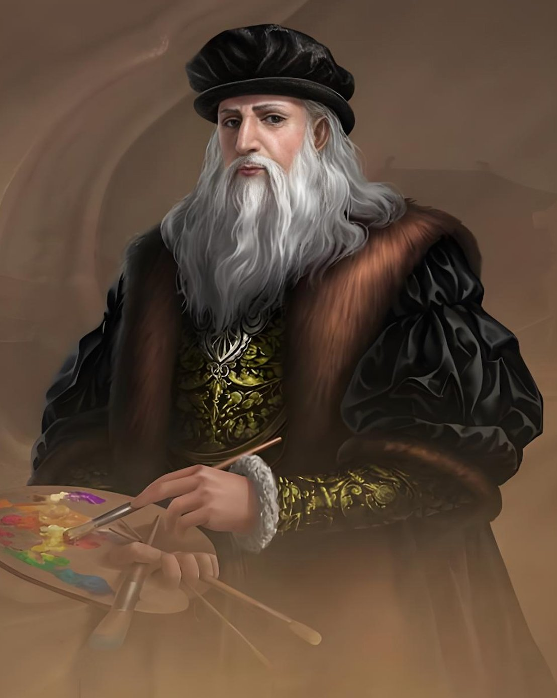
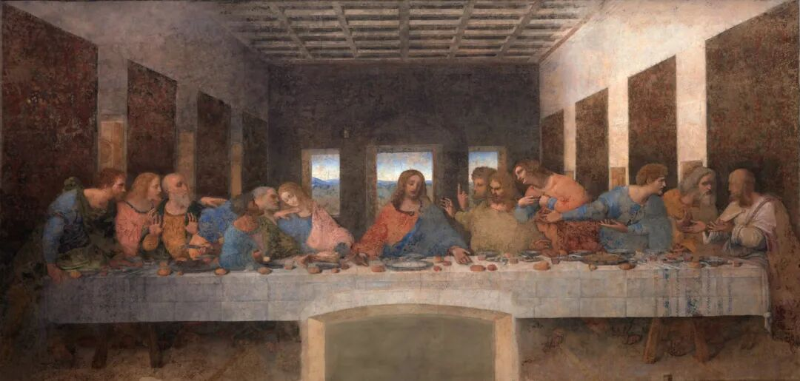
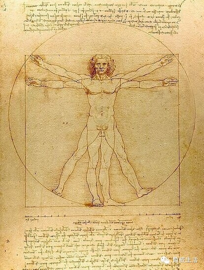

这本书写的是列奥纳多·达·芬奇——文艺复兴时把艺术、科学、技术混在一起玩的天才，也是影响了后世 500 多年的"网红"。
作者艾萨克森写他，起点不是那些名画，而是他留下来的约 7200 页笔记。他想用这些笔记回答一个问题：一个没怎么上过学、还老是拖稿的人，凭什么有那么强的创造力？所以这本书最后一章直接就叫"创造力密码"。
艾萨克森给出的答案很简单：不是天赋异禀，而是他把"对世界充满好奇"这件事做到了极致。所以他一边画《蒙娜丽莎》，一边研究解剖、飞行、水流和地质。看完你会发现，他的厉害不在某一项手艺，而在那股一直问"为什么"的劲儿。





列奥纳多是演奏及制作里拉琴的高手、优秀的即兴诗人、演出庆典设计师、画家兼工程师、解剖学研究者、武器设计师，以及遗迹化石学的先驱……
达·芬奇生在 1452 年的意大利，那时候正好是文艺复兴最热闹的阶段——人们重新开始看重人的能力，不再只信教条。这种氛围让他可以名正言顺地探索五花八门的东西。
他身上有几重"异类"身份：私生子、左撇子、素食者，还特别容易分心。放在别的年代，这些可能都是麻烦；但在文艺复兴，加上他自己的性情，反而让他不被任何框框住。
艾萨克森写得很明白：他幸好是个私生子，否则家里会指望他子承父业去当公证员——他家至少四代都做这一行。正因为没被安排这条路，他才走上了绘画和探索。所以他的"不合常规"，成了他能自由探索的起点。
保持好奇，对日常现象也肯停下来琢磨。"列奥纳多的研究方法植根于实验、好奇心"，而大多数人早就对这些现象习以为常，不再停下来思考。
求知欲。他从来不问"这有没有用"，只是不停追问"这是什么""这是为什么"。
一手信息。"通过自己的观察和实验获取一手经验，用你的双眼和双手去亲自发现，与拿着手机消费别人的成果不可能是同样的感受。"
敢于质疑现有的结论。他不盲从既有的说法，敢去探索，敢做那个"异类"。"不应止步于吸收知识，更要去质疑，要充满想象力，要敢于不同凡'想'。"
跨学科。为了画好人像，他去解剖；为了画好水流，他去研究物理。艺术、科学和技术，在他手里是同一回事。
拖延并不全是坏处。"后来列奥纳多在方方面面都远远超过了自己的老师，其中也包括容易分心、半途而废，还有拖延交付。"适度拖延让他不断打磨，但别学"拖到烂尾"——要学的是"为了把事情搞明白，舍得花时间的劲儿"。
记录的习惯。"当你独处时，你才是自己的主人。"想到就写、看到就画，他一辈子留下了约 7200 页笔记。